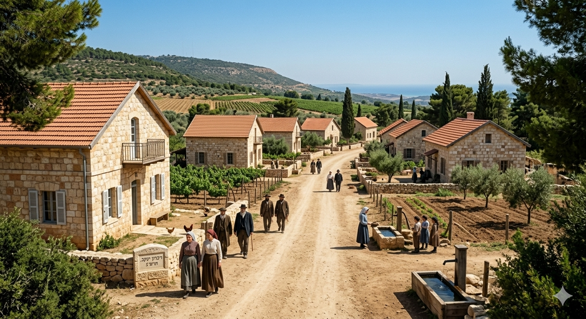
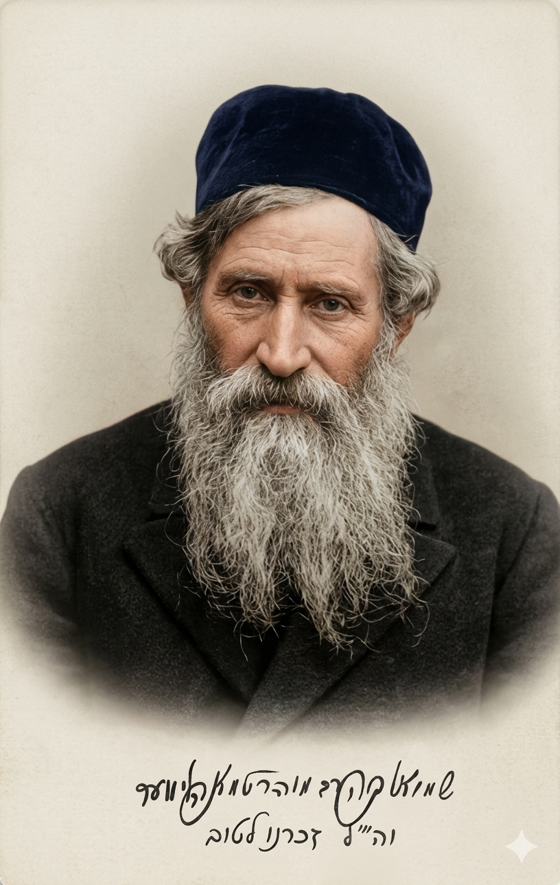
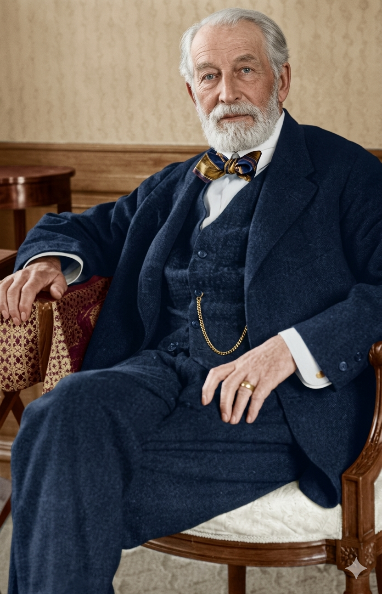
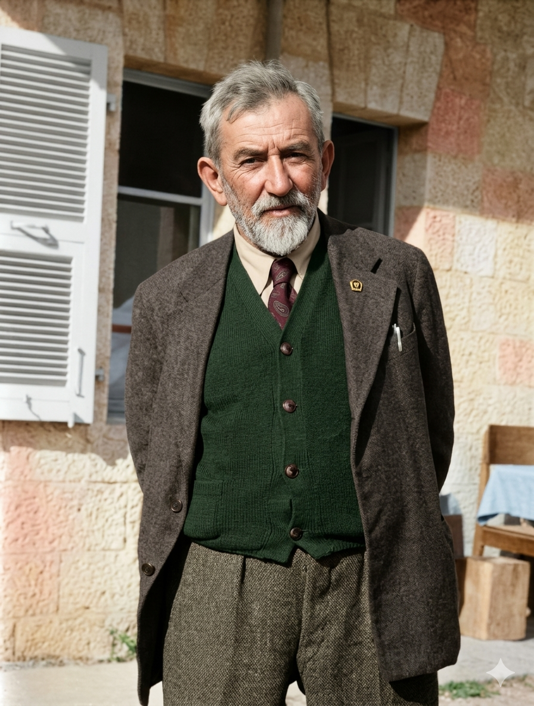
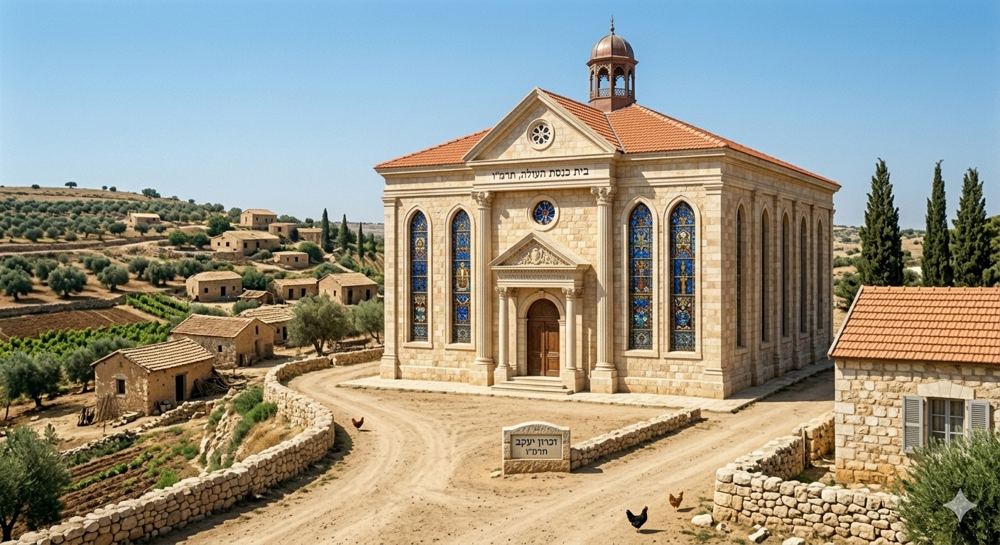
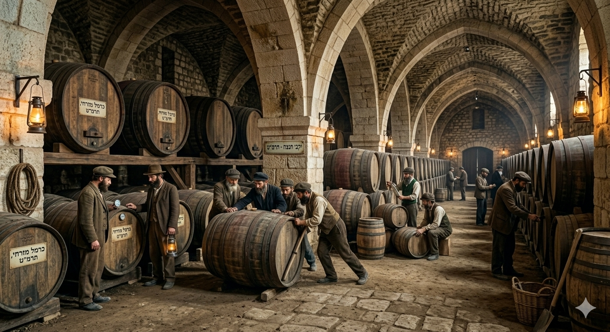
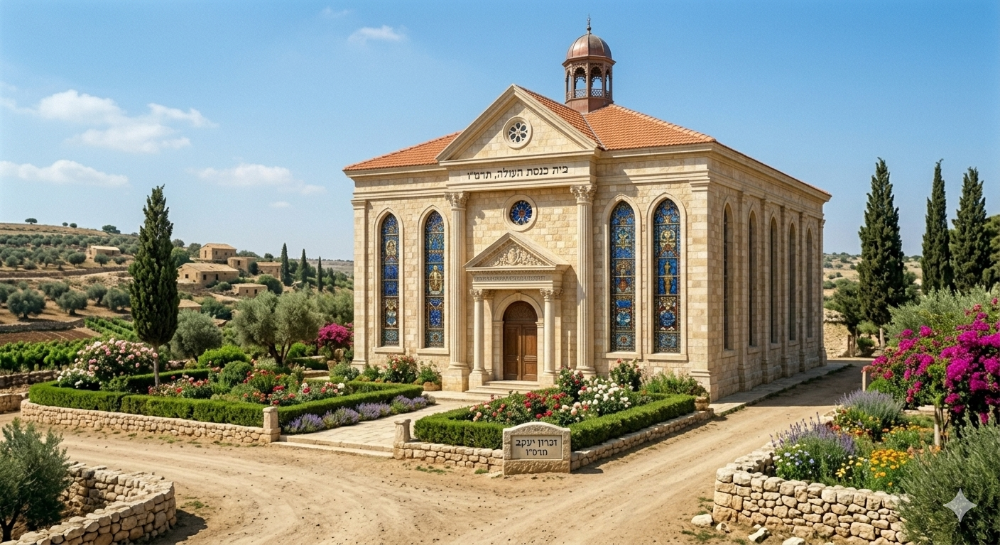

תעודת זהות היסטורית
שנת בנייה/הקמה: 1882 (תרמ"ג). (העלייה לקרקע התרחשה בדצמבר 1882, בחג החנוכה).
הוגים ובונים (יזמים): חברי הוועד המרכזי של יהודי רומניה. בזכות השתדלנות של הרב שמואל מוהליבר בפריז, פרש עליה חסות הברון אדמונד דה רוטשילד.
סיבת ההמצאה/הבנייה:
יהודי רומניה ביקשו להקים התיישבות חקלאית בארץ ישראל כפתרון קבע למצוקתם הלאומית. הם רכשו אדמה הררית ובריאה במכוון כדי להימנע מסכנת המלריה.
ניתוח אטימולוגי מקיף לשם המושבה
שמה של המושבה עבר גלגול היסטורי המשלב בין המקום הפיזי לבין הוקרת תודה למשפחת רוטשילד.
השם המקורי: זַמָארִין
המשמעות והמקור: נגזר משמו של הכפר הערבי שהיה ממוקם על הרכס. הסברה ההיסטורית היא שהשם משמר את זכרם של השומרונים ("שומרים" - זמארין) ששכנו באזור בעת העתיקה.
השינוי ל: זִכְרוֹן יַעֲקֹב
פירוק ומשמעות: "זכרון" (הנצחה) + "יעקב" (ג'יימס).
המקור ההיסטורי: הברון אדמונד דה רוטשילד ביקש להנציח בשם המושבה את זכר אביו, ג'יימס (יעקב מאיר) רוטשילד, ראש הענף הצרפתי של המשפחה. השינוי סימל את הקשר העמוק והחסות המוחלטת של הברון על המקום.

ההתיישבות על רכס הכרמל
תיאור היסטורי: הבתים הראשונים של זמארין על רקע הנוף ההררי הטרשי.
רכישת הקרקע והמסע הגורלי לפריז
בדצמבר 1882 עלו כמאה משפחות עולים מרומניה אל רכס הכרמל, לאחר שרכשו את אדמות זמארין מידי משפחת שומאכר. החורף הראשון היה אכזרי. לעולים חסר כל ניסיון בחקלאות הררית, האדמה הייתה מסולעת וקשה לעיבוד, והכסף שהביאו מרומניה אזל במהירות. המושבה הצעירה עמדה בפני קריסה מוחלטת וסכנת רעב.
מסע ההצלה של הרב שמואל מוהליבר (1882): כדי להציל את המפעל הקורס, יצא הרב שמואל מוהליבר מרוסיה לפריז. בעזרתו של הרב צדוק כהן, רבה הראשי של צרפת, הצליח מוהליבר לקבוע פגישה עם הברון אדמונד דה רוטשילד. בשיחה גורלית זו, פנה הרב מוהליבר אל רגש האחריות הלאומי של הברון ושכנע אותו לקחת את המושבה תחת חסותו. פגישה זו היא שהולידה את מפעל "הנדיב הידוע" והצילה את זכרון יעקב מכליה.
דמויות מפתח: פרופילים ביוגרפיים
הרב שמואל מוהליבר 1824 – 1898

ילדות ורקע:
נולד בבלארוס, נודע כעילוי תורני ושימש כרב בקהילות פולין ורוסיה. הוא נחשב לאחד הרבנים המשפיעים ביותר ביהדות מזרח אירופה במאה ה-19.
אידאולוגיה וחזון:
מראשי "חיבת ציון". האמין שיישוב הארץ הוא מצווה דתית עליונה ודגל בשיתוף פעולה בין דתיים לחילונים למען המטרה הלאומית.
הישגים:
- שכנע את הברון רוטשילד בפריז לתמוך במושבות.
- עמד בנשיאות קונגרס קטוביץ ההיסטורי (1884).
הברון אדמונד דה רוטשילד 1845 – 1934

ילדות ורקע:
בן למשפחת הבנקאים המפורסמת בפריז. גדל עם חינוך יהודי והיה קשוב לגורל יהודי מזרח אירופה. בניגוד לאחיו, התעניין בפילנתרופיה וציונות.
אידאולוגיה וחזון:
האמין בביסוס כלכלי חזק של המפעל הציוני. ראה בזכרון יעקב את "מושבת הדגל" שלו ורצה להקים בה מרכז אדמיניסטרטיבי ותעשייתי מתקדם.
הישגים:
- הקים את יקבי כרמל ופיתח את תעשיית היין הארץ-ישראלית.
- מימן את בניית המושבה, בתי הכנסת ומוסדות החינוך והרפואה.
ד"ר הלל יפה 1864 – 1936

ילדות ורקע:
נולד ברוסיה, למד רפואה בשוויץ והתמחה ברפואה טרופית. עלה לארץ כרופא מקצועי אידיאליסט.
אידאולוגיה וחזון:
האמין שחלוציות והתיישבות דורשות רפואה מונעת ותשתיות סניטריות. ראה במלחמה במחלות חלק בלתי נפרד מגאולת הארץ והצלת המתיישבים.
הישגים:
- "לוחם המלריה הגדול" - פיתח שיטות לייבוש ביצות באמצעות אקליפטוסים ומניעת הדבקה.
- שימש כרופא המושבות והנהיג רפורמות בריאותיות מרחיקות לכת בכל האזור.
ממשבר לשגשוג: ציר זמן ומוסדות עוגן בזכרון יעקב
1882 - 1888: העלייה לקרקע ומרד נגד הפקידות
השנים הראשונות התאפיינו בסבל רב עקב תנאי השטח. לאחר שהברון פרש את חסותו, הוקם "משטר הפקידות". הפקידים שנשלחו מצרפת התייחסו לעולים מרומניה כאל פועלים נבערים ולא כאל שותפים לחזון הלאומי. הם הכתיבו להם מה לזרוע, כיצד לנהל את חייהם ואפילו אילו שפות לדבר. הדבר הוביל ל"מרד האיכרים" המפורסם של זכרון יעקב (1888), בו דרשו האיכרים עצמאות ניהולית. למרות שהמרד דוכא והפקידות נותרה, הוא סימן את הרצון העז של החלוצים להיות אדונים לעצמם.
1886: הקמת בית הכנסת "אוהל יעקב"
מוסד דתיבית הכנסת "אוהל יעקב" נבנה בסיוע מלא של הברון רוטשילד, שהקפיד על בניית מוסדות דת ראויים במושבותיו. הושקע הון רב בעיצוב ארכיטקטוני מהודר. המבנה עוצב בסגנון ניאו-קלאסי מרשים עם חלונות ויטראז' קשתיים ועיטורים אירופאיים, והוא משמש עד היום כסמלה המובהק ביותר של המושבה ואחד המבנים היפים בארץ מימי העלייה הראשונה.

1892: השלמת יקבי כרמל בזכרון יעקב
התעשייה המרכזיתבמקביל להקמת היקב בראשון לציון, החל הברון בנטיעת אלפי דונמים של כרמים במורדות זכרון יעקב וסביבתה (שפיה, בת שלמה). בשנת 1892 הושלמה בנייתו של יקב ענק נוסף. היקב נבנה בטכנולוגיה החדישה ביותר שהייתה קיימת בצרפת באותם ימים. הוא קלט את ענבי האזור כולו והיווה מקור תעסוקה מרכזי. המפעל התאגד יחד עם ראשון לציון ל"אגודת הכורמים", ויחד ייצרו מותג יין שזכה במדליות בתערוכות עולמיות בפריז כבר בראשית המאה ה-20.

1890 ואילך: בניין הפקידות (ומיקום עתידי של ניל"י)
מוקד המנהל
כדי לנהל את המושבה שהפכה ל"בירת הברון" בארץ, נבנה במרכז המושבה "בית הפקידות" המפואר. משם נוהלה כל הכלכלה, החקלאות ואפילו החיים האישיים של התושבים על ידי פקידי הברון הצרפתים.
הקשר לניל"י: עשורים מאוחר יותר (בזמן מלחמת העולם הראשונה), זכרון יעקב הפכה למרכז פעילותה של מחתרת ניל"י, שהוקמה על ידי משפחת אהרנסון המקומית. בני המושבה השתמשו במעמד של המושבה כבסיס לפעילות הריגול החשאית נגד הטורקים.

מקורות וביבליוגרפיה
- מוזיאון העלייה הראשונה (זכרון יעקב): הארכיון המקיף המתעד את חיי האיכרים, משטר הפקידות והקמת מוסדות העוגן כמו היקב ובית הכנסת.
- כתבי הרב שמואל מוהליבר ויומני "חיבת ציון": תיעוד מסעו ההיסטורי לפריז והמפגש עם הברון.
- "הברון רוטשילד וההתיישבות היהודית" (רן אהרונסון): מקור המפרט את פיתוח תעשיית היין במושבות הכרמל.